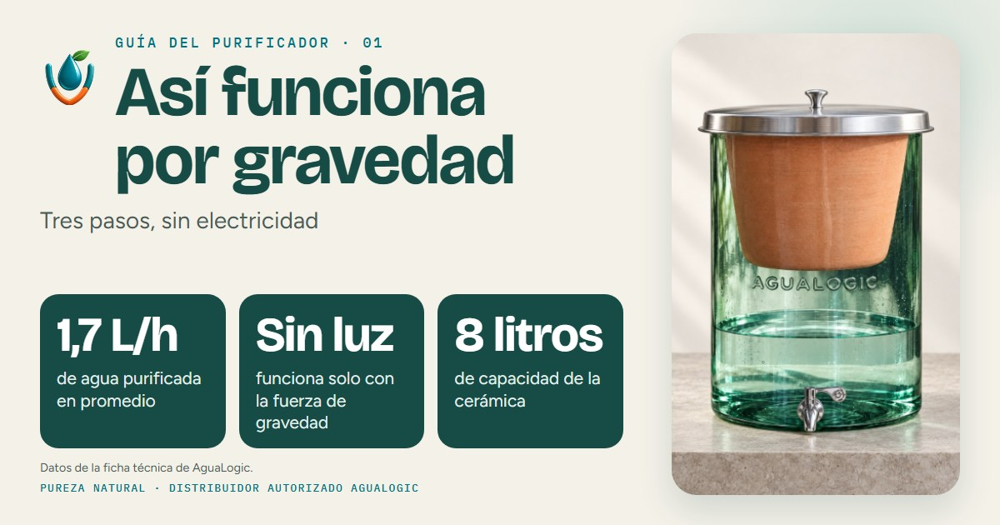
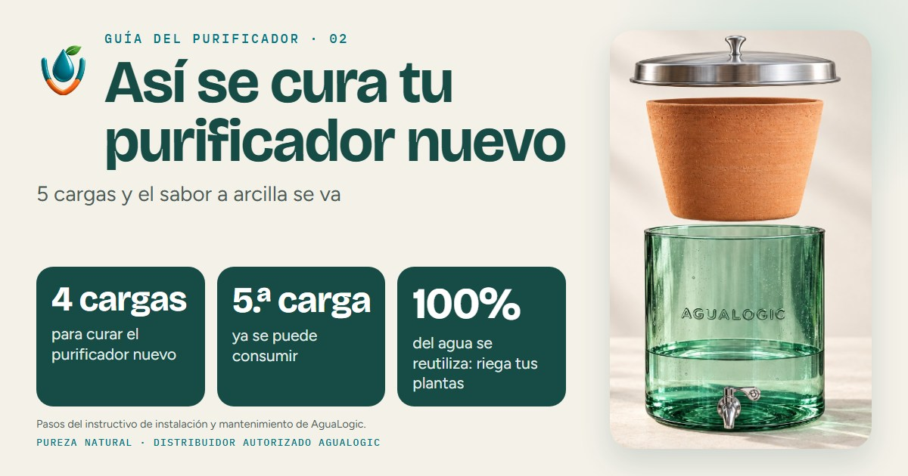
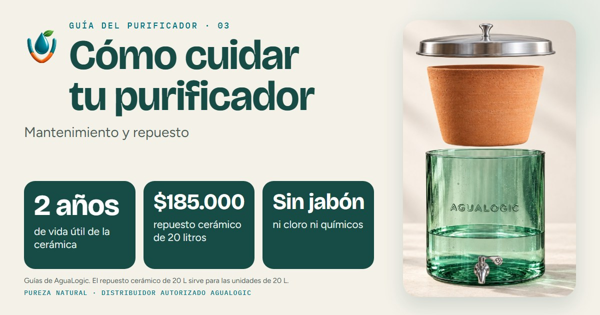
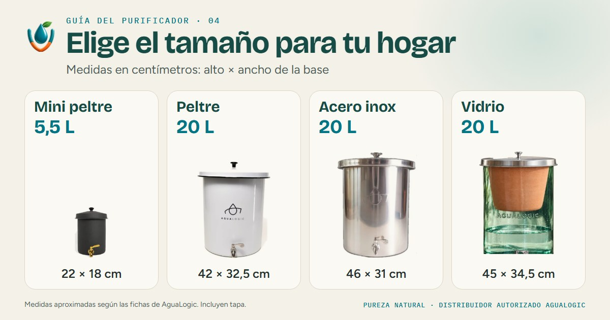
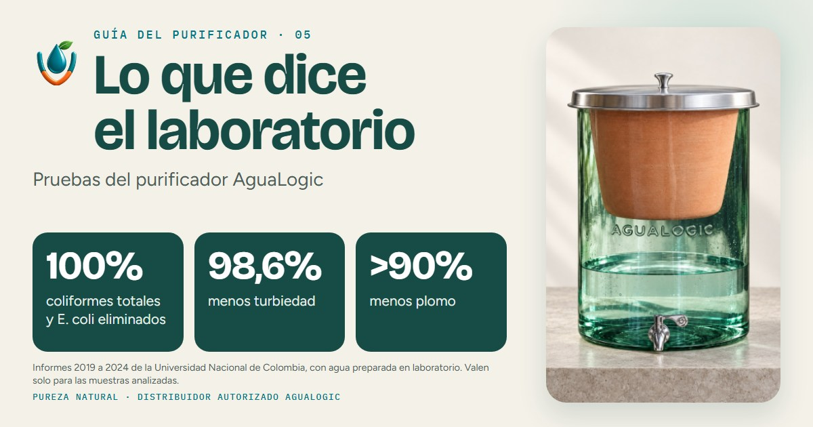
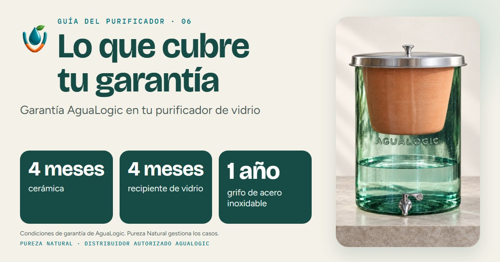
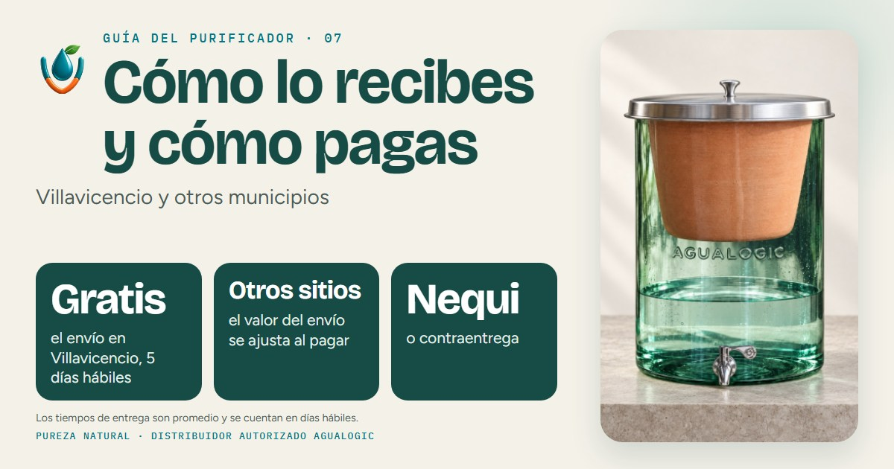
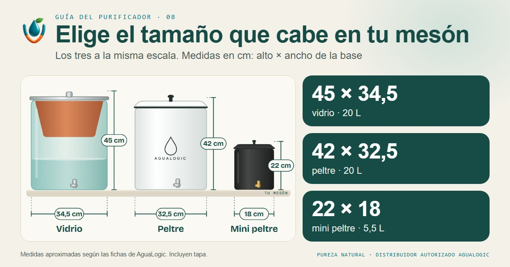

Pureza Natural · Distribuidor autorizado AguaLogic
Asistente de WhatsApp: cómo se vería
Documento ilustrativo: el asistente aún no está conectado a un número real. Abrir la presentación en PDF. Debajo, las ocho imágenes que acompañan las respuestas.







